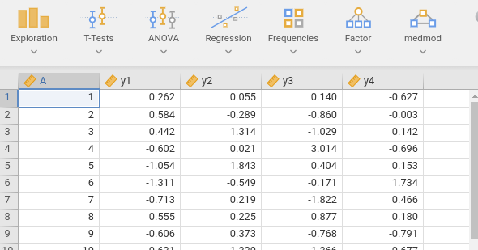
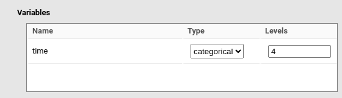
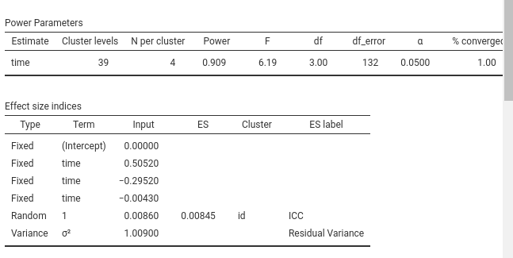

Mixed vs RM-ANOVA
0.8.0
Comparing software results in power analysis for mixed models is not straightforward. Only a few programs support this type of analysis, and those that do often implement different procedures. Here we compare equivalent designs using power analyses based on different statistical tests. The goal is to examine whether analyses conducted with different approaches yield similar power estimates.
Specifically, we compare the required sample size estimated via repeated-measures ANOVA with that obtained from mixed-model power analysis. We use a simulated dataset that produces equivalent results under both ANOVA and mixed models, and we show that the corresponding power analyses converge to similar conclusions.
RM-AVOVA
The data mimic a repeated-measures design, with time as a categorical independent variable with four levels and a continuous dependent variable. To analyze them with repeated-measures ANOVA, we require a wide-format dataset, with one row per participant and the following structure:

The repeated-measure ANOVA has one categorical variable (time) measured over 4 times. The dependent variable is a continuous variables. Based the RM-ANOVA on a sample of 50 cases, we obtain a partial eta-squared \(\eta_p^2=.115\).

With this information, we estimated the required sample size to
obtain a power of at least .90 using PAMLj Factorial Designs
command.

obtaining a sample size of \(N=39\).

With the original \(N=50\) cases, the expected power would be \(1-\beta=.965\).

Mixed model
The same data, in long format, were analyzed with a mixed model, with
time as factor, coded with deviation coding
(0’s,-1, and 1’s), and random intercept across participants. Results
showed the same F-test of the RM-ANOVA, but give us the coefficients for
the contrast variables and the random coefficients variances required to
set up the power analysis model.

So, the RM-ANOVA results are equivalent to a mixed model with three contrast variables representing time, with coefficients \(.5052\),\(-.2952\), and \(-.0043\). The random intercept variance was \(\sigma_I^2=.00863\) and the residual variance \(\sigma^2=1.009\). We can plug these values in the mixed model power analysis command.

First, we use the squared-brackets syntax to attach
three coefficients to the corresponding contrast variables representing
time. Second, we multiply the random intercept (1)
by the expected variance (\(.0083\)).
This way, we pass the expected coefficients required to build the mixed
model for simulating power and finding the required N.
Because in this model participants are the clusters of the model, we
set Calculate: N as aim and
Number of cluster levels as specific aim.

We then specify in the Model Structure
-> Clustering vriables
that the variable id (the participants) has
N per cluster equal to 4, because within each participant
there will be 4 repeated measures.
Then, we specify that the variable time is a categorical variable with 4 levels.

Finally, we set the residual variance of the model to \(1.009\) as we found in the mixed model.

Running the analysis yield a required N
(Cluster levels=number of participants) of 39, as expected
by the RM-ANOVA power analysis. Because the mixed model power analysis
is based on Monte Carlo simulations, different runs may yield slightly
different N, but the results substantially converge.

As an additional check, we compute the expected power of the mixed model test of time based on the original 50 participants. We get \(1-\beta=.967\), remarkably similar to the one obtained with the RM-ANOVA power analysis (\(1-\beta=.966\))

Again, repeating the calculation yields slightly different results, but all substantially congruent with the expected values.
Comments?
Got comments, issues or spotted a bug? Please open an issue on PAMLj at github or send me an email